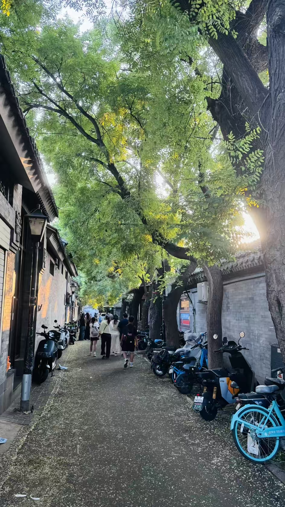

南锣鼓巷位于北京中轴线东侧的交道口地区，北起鼓楼东大街，南至平安大街，宽8米，全长787米，是北京最古老的街区之一，已有740多年的历史，是元大都时期的老街区，完整地保存着元大都里坊的历史遗存。
南锣鼓巷东西两面共有16条胡同整齐排列着，呈"鱼骨状"，这里曾是元大都的市中心，明清时期则更是一处大富大贵之地，王府豪庭数不胜数。如今的南锣鼓巷是北京著名的文化休闲街区，聚集了众多特色小店、咖啡馆、酒吧和创意工作室，是年轻人和游客的打卡圣地。
漫步在南锣鼓巷，你可以看到老北京的胡同四合院，也可以感受到时尚的文艺气息。这里有各种北京特色小吃、手工艺品、文创产品，是体验老北京文化与现代潮流结合的好去处。周边还有烟袋斜街、什刹海、鼓楼等景点，可以一并游览。
门票：免费
开放时间：全天开放，店铺一般10:00-22:00
交通：地铁6号线/8号线南锣鼓巷站